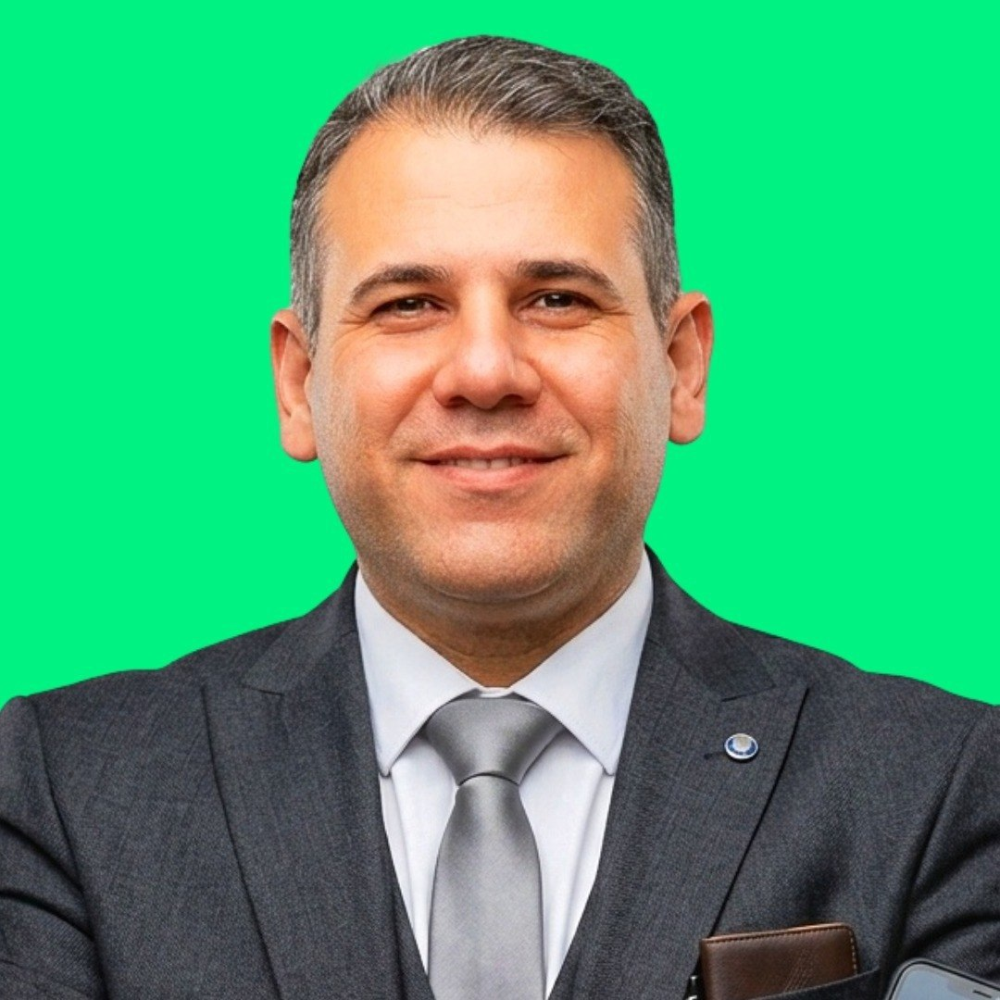

مطهر اولاد الشلبي لختان الأطفال والطهور الآمن في الأردن
إذا كنت تبحث عن مطهر اولاد الشلبي أو مطهر أولاد الشلبي، فنحن نقدم رعاية طبية متخصصة وآمنة لطفلك مع خبرة طويلة في مجال التطهير والختان لضمان راحتكم وسلامة أطفالكم.
لماذا تختار عيادة أبو زيد الشلبي؟
خدمات متخصصة
أحدث الطرق الطبية الآمنة والمعقمة لضمان سلامة طفلك.
رعاية شاملة
متابعة مستمرة قبل وأثناء وبعد الإجراء الطبي.
فريق متخصص
كادر طبي ذو خبرة وكفاءة عالية في التعامل مع الأطفال.
100% رضا
نسعى دائماً لتقديم أفضل خدمة تنال رضاكم وثقتكم.
خدماتنا الرئيسية
🌟 خبرة متوارثة وثقة تتجدد عبر الأجيال.. خدمات الختان بأيدي أبناء الحاج قاسم الشلبي 🌟
في "مطهّر أولاد الشلبي" أو كما يبحث كثير من الأهالي: مطهر اولاد الشلبي، نفخر بحمل أمانة المهارة التي أسسها الحاج قاسم الشلبي منذ عام 1920. واليوم، نؤكد لكم أن مسيرة العطاء مستمرة بذات الدقة والرعاية، تحت إشراف ابنه البار:
🔹 أبو زيد الشلبي 🔹
نعم.. أبو زيد هو من أبناء الحاج قاسم الشلبي، يجمع بين المهارة المتوارثة والتقنيات الحديثة ليظل "خيار العائلة الأول" في الأردن.
ختان آمن
إجراء عمليات الختان (الطهور) للأطفال بأعلى معايير السلامة والتعقيم الطبي. نستخدم أحدث التقنيات الطبية المريحة لضمان سرعة الشفاء وتقليل الألم والمضاعفات.
فك ربط اللسان والزوائد
فك ربط اللسان والزوائد اللحمية بدقة عالية وعناية فائقة. نتابع الحالة بشكل مستمر لضمان النتائج الأفضل وراحة الطفل الكاملة.
ترميم الطهور غير الناجح
تصحيح وترميم الطهور غير الناجح أو الذي يحتاج لتحسين. نستخدم خبرتنا الطويلة والتقنيات الحديثة لتحقيق أفضل النتائج.
لماذا يثق بنا الآلاف؟
لأننا المرجعية الرسمية والأصلية (أبناء الحاج قاسم الشلبي).
رعاية فائقة تضمن راحة طفلك واطمئنانك.
📍 موقعنا: إربد - شارع عين جالوت - قرب دوار شركة الكهرباء.
(المبنى المميز باللونين الأزرق والأخضر)
📞 اتصلوا بنا الآن للحجز والاستفسار: 0777246833
أبناء الحاج قاسم الشلبي.. مائة عام من الثقة والإتقان. 🛡️✅
مطهر اولاد الشلبي
كثير من الأهالي يبحثون في Google عن عبارة مطهر اولاد الشلبي أو مطهر أولاد الشلبي عند الرغبة في الوصول إلى خدمة ختان أطفال موثوقة. هذه الصفحة تمثل الموقع الرسمي لعيادة أبو زيد الشلبي وأبناء الحاج قاسم الشلبي في إربد، مع معلومات واضحة عن الخدمة والتواصل ومعرض الصور والمقالات المتخصصة.
يمكنك أيضًا زيارة الصفحة المخصصة لهذه العبارة عبر الرابط: مطهر اولاد الشلبي
احجز موعدك الآن
الشلبي لتطهير الأولاد
الرمثا | إربد | عمان | المفرق | عجلون | جرش
خبرة ممتدة
سنوات طويلة من التخصص والاحترافية في مجال التطهير الآمن للأطفال.
دقة عالية
عناية فائقة في التنفيذ لضمان أفضل النتائج وراحة الطفل.
أمان تام
نتبع أقصى معايير التعقيم والسلامة الطبية العالمية.
أحدث التقنيات
نستخدم أفضل وأحدث الأساليب الطبية المريحة والآمنة.
دقة في المواعيد
نلتزم بجدول مواعيدكم بكل احترام واحترافية.
متابعة مستمرة
نبقى معكم للاطمئنان على حالة الطفل بعد العملية.
نبذة عن أبو زيد الشلبي
مسيرة مهنية حافلة بالعطاء والخبرة (أبناء الحاج قاسم الشلبي)
أبو زيد الشلبي هو خبير متخصص في خدمات التطهير (الختان) للأطفال، وهو من عائلة "أبناء الحاج قاسم الشلبي" العريقة التي تمتلك خبرة تمتد لأكثر من 100 عام في هذا المجال في الأردن. يمتلك خبرة واسعة في تقديم رعاية طبية آمنة ومعقمة، وقد كرس مسيرته المهنية لضمان راحة وسلامة الأطفال، معتمداً على أحدث الطرق الطبية والخبرة المتوارثة.
أبرز الإنجازات والخبرات:
- خبرة عائلية (أبناء الحاج قاسم الشلبي) تمتد لأكثر من قرن في خدمات ختان الأطفال في الأردن.
- تقديم استشارات طبية متخصصة للآباء والأمهات لضمان أفضل تحضير للإجراء.
- الالتزام التام بأعلى معايير السلامة والتعقيم واستخدام أحدث التقنيات.
- متابعة حثيثة ورعاية شاملة لضمان التعافي التام وسرعة الشفاء.

صور من عيادة أبو زيد الشلبي
جولة سريعة داخل العيادة وبعض الصور التي تعكس طبيعة المكان والخدمة والاهتمام بالتفاصيل.
آراء وتجارب عملائنا
"تجربة ممتازة جداً، أبو زيد محترف وتعامل راقي مع الأطفال. لم يشعر طفلي بأي ألم والتعافي كان سريعاً. أنصح الجميع بالتعامل معه."
"أنصح بشدة بعيادة أبو زيد الشلبي. نظافة، تعقيم، ومتابعة مستمرة بعد الإجراء. شكراً لكم على جهودكم واهتمامكم بأدق التفاصيل."
"كنت متخوفة جداً من الإجراء لطفلي، ولكن أبو زيد طمأننا وشرح لنا كل الخطوات. تمت العملية بسلاسة تامة. بارك الله فيكم."
الأسئلة الشائعة
ما هي أوقات العمل في العيادة؟
نستقبلكم طوال أيام الأسبوع بناءً على حجز مسبق لضمان تقديم أفضل رعاية لطفلك دون انتظار. يرجى التواصل معنا لتحديد الموعد المناسب لك ولطفلك.
ما هي فترة التعافي المعتادة بعد إجراء التطهير (الختان)؟
في معظم الحالات، يستغرق التعافي الأولي من 3 إلى 5 أيام، بينما يكتمل الشفاء تماماً خلال أسبوع إلى أسبوعين. سنقوم بتزويدك بكافة التعليمات الطبية اللازمة للعناية بطفلك خلال هذه الفترة لضمان شفاء سريع وآمن.
كيف أجهز طفلي للإجراء الطبي؟
ننصح بإطعام الطفل قبل الإجراء بفترة قصيرة ليكون هادئاً، وإحضار ملابس قطنية فضفاضة وحفاضات إضافية. سنقوم بشرح كافة التفاصيل والخطوات لك قبل البدء لضمان راحتك وراحة طفلك.
كيف يمكنني حجز موعد؟
يمكنك حجز موعد بسهولة من خلال التواصل معنا مباشرة عبر الهاتف أو من خلال نموذج الحجز في الموقع. فريقنا مستعد للرد على استفساراتك وتحديد الوقت الأنسب لك.
هل العملية آمنة تماماً؟
نعم، العملية آمنة تماماً عندما تتم بواسطة متخصص ذو خبرة. نتبع أقصى معايير السلامة والتعقيم الطبي العالمية ونستخدم أحدث التقنيات الطبية.
هل تقدمون خدمات المتابعة بعد العملية؟
نعم، نقدم متابعة شاملة بعد العملية مع تزويدك بكافة التعليمات الطبية والعناية المنزلية اللازمة. يمكنك التواصل معنا في أي وقت للاستفسار أو الحصول على النصح الطبي.
سياسة الخصوصية متاحة بوضوح على الصفحة الرئيسية
معلومات التواصل الأساسية مثل الاسم ورقم الهاتف والرسالة عند طلب الحجز أو الاستفسار.
نستخدمها فقط للرد على الاستفسارات، ترتيب المواعيد، وتحسين تجربة الخدمة والمتابعة.
نلتزم بحماية البيانات وعدم مشاركتها إلا عند الحاجة النظامية أو التشغيلية الواضحة.
لقراءة النص الكامل للتفاصيل القانونية وحقوق المستخدم وآلية التواصل، يمكنك زيارة صفحة سياسة الخصوصية الكاملة .
تواصل معنا
معلومات التواصل
📍 الموقع: إربد - شارع عين جالوت (بالقرب من دوار شركة الكهرباء)
📞 الهاتف: 0777 246 833
📞 الهاتف: 0785 550 720
📞 الهاتف: 0796 590 026
💬 واتساب: تواصل عبر واتساب
📧 البريد: info@alshalbi.com
موقعنا على الخريطة
يمكنك الوصول إلينا بسهولة عبر Google Maps أو فتح الموقع مباشرة من الرابط.